1引言
各种生物漫游于老布拉格（Old Prague）。它们致力于把这座城市修复回大洪水（the great flood）之前——彼时各个街区（Neighborhoods）欣欣向荣。长久岁月里，它们各自全心为自己族类的利益奔走；如今，角魔、水妖、魔像与机器人必须团结起来，从地基开始重建布拉格。
在《布拉格秘境（Prague Unseen）》中，你扮演一名市民（burgher），通过各种类型的工人来触发各街区（Neighborhood）和建筑（Building）行动。你的目标是最大化运用你的帮手，在游戏结束时拥有最多的胜利点数。你将获取资源，开设新的营业场所——它们会为游戏增添新行动；你还将参与由各街区独有的「街区小游戏（minigames）」，以及更多。
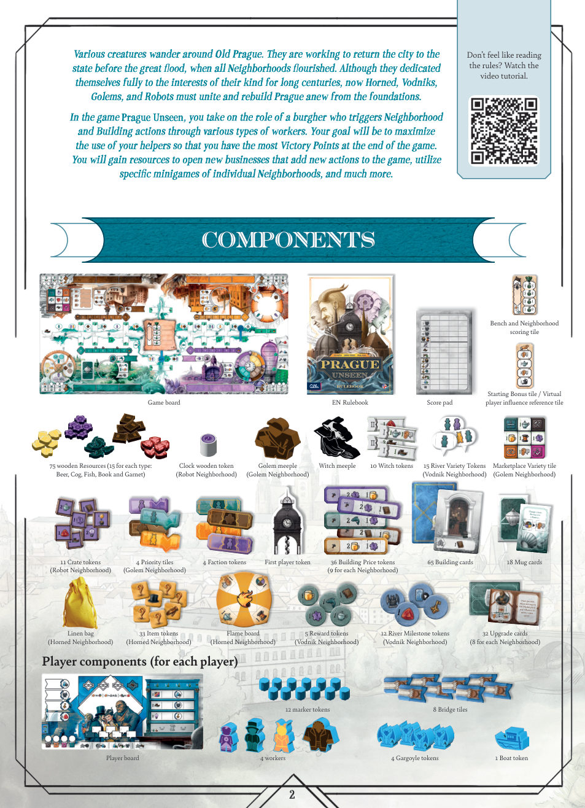
2组件
公共组件
双面（1–2 人面 / 3–4 人面）。
分为一阶、二阶、三阶（对应三个纪元）。
每个街区 ×8。
即时生效的卡牌。
可在街区间移动的人物。
置于棋盘中央。
双面。
用于人气（Popularity）轨道。
每个纪元传递。
分为 Level一与 Level二两堆。
水妖街区可选多变配置。
魔像街区可选多变配置。
每种 ×15：啤酒（Beer）、齿轮（Cog）、鱼（Fish）、书（Book）、石榴石（Garnet）。
每个街区 ×9。
记录每纪元的胜利点数。
角魔街区。
机器人街区。
魔像街区。
水妖街区（水车轮盘与河道）。
每位玩家的组件
所选颜色的。
用于河道。
用于谣言（6 上限）、灵感轨道、影响力、行会与终局计分表。
预组为 4 叠，每叠 2 张。
用于 4 条影响力轨道。
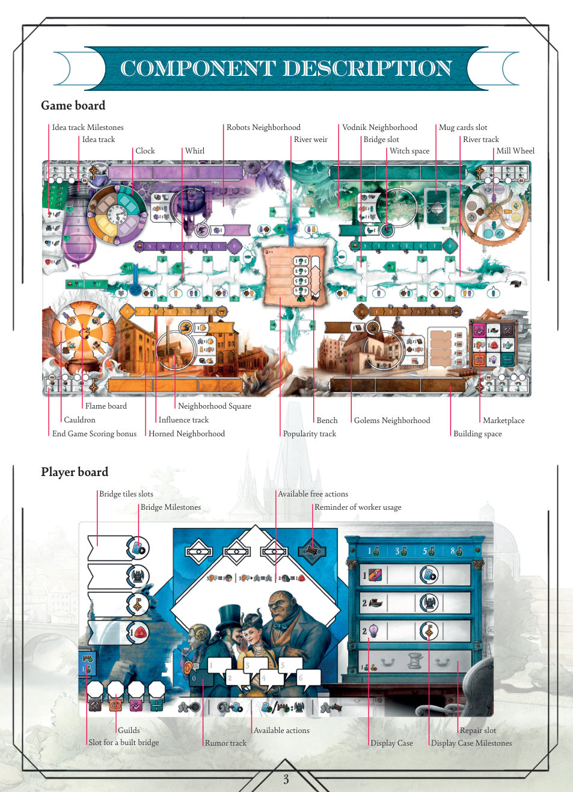
3准备
- 放置游戏棋盘到桌子中央，根据玩家人数选择正确的面朝上——信息可在棋盘中央的人气（Popularity）轨道下方找到。
- 准备人气轨道。将长凳与街区计分板（Neighborhood Scoring tile）放到棋盘中央，「一」面朝上。洗混 4 张派系板块，随机放在它旁边。
- 放置起始奖励板（Resource 面朝上）到长凳与街区计分板上方。
- 放置女巫人物到人气轨道上位置最低的那个街区。
- 依次准备各个街区：
- 角魔（Horned）：把焰板放到大锅（Cauldron）上并随机对齐四个空格位。向大锅四段每段各随机放入 1 张物品标记（Item token）。剩余标记放入袋中备用。
- 机器人（Robots）：把时钟标记放到机器人图标的格子上。在内圈四个区段各放 2 张随机板条箱标记（Crate token）面朝上。未使用的板条箱标记放回盒中。
- 水妖（Vodniks）：洗混酒杯卡并将其面朝下放在棋盘上的指定位置。把所有 5 张奖励标记随机放入水车轮盘（Mill Wheel），必须保证水妖段 2 张，其他三个生物段各 1 张。把河道里程碑标记按背面波纹（2 波或 4 波）分为两堆，第一堆放在河道中央的指定位，第二堆放在河道尾端。
- 魔像（Golems）：把魔像人物放到市集（Marketplace）中央。洗混 4 张工人优先级片（Worker Priority tiles），随机放在广场（Square）旁。
- 准备升级卡。每个街区有 8 张；分别洗混后每堆抽 4 张。这些牌面朝下放在棋盘下、对应街区旁边。把剩余牌放回盒中。
- 按街区分类建筑价格标记。在每个街区的三个建筑位（Building spaces）上，先各放 1 张随机三阶标记，再在上面放二阶标记，最后放一阶标记。
- 准备一支笔和计分纸以记录胜利点数。
- 准备资源标记库到伸手可及的位置：啤酒、齿轮、鱼、书和石榴石。
- 放置三堆建筑卡到棋盘旁，分为一阶、二阶、三阶。分别洗混每堆。从一阶堆顶部翻开 4 张面朝上、放在棋盘旁形成公共建筑供应（common Building offer）。建筑阶数与游戏的三个纪元对应，每纪元从对应阶的牌堆出牌。
- 把女巫标记分成两堆（一阶与二阶），面朝下放在棋盘附近。
- 每位玩家选择一种颜色并拿走该颜色的所有标记（1 条小船、4 名工人、4 个石像鬼、8 张桥段和 12 个标记）。将该颜色的玩家面板放到自己面前，**无符号的一面朝上**。
- 每位玩家在谣言（Rumor）轨道的「0」位放 1 个自己的标记，在灵感轨道（机器人街区）也放 1 个。
- 把八张桥段放在玩家面板左侧。洗混它们，组成四叠每叠 2 张，每叠上面一张盖在下面一张之上。**所有桥段放成行会符号面朝上**。
- 每位玩家在 4 条影响力轨道的起始格各放 1 个石像鬼。
- 将每位玩家的小船标记放在河道起点。
- 洗混零阶建筑卡（Level 0 Building cards）并向每位玩家发 2 张。
- 最后坐上扫帚的玩家担任起始玩家。若不确定则随机选择。他们拿走先手标记（First player token）。
- 从最后一位玩家起，逆时针进行，每位玩家选择一个**还没有建筑卡**的街区，免费建造手中的 1 张零阶建筑卡。把所选零阶建筑卡**面朝上**放在**该街区中央建筑价格标记下方**。【译者注】第 17 步向每位玩家发了 2 张零阶建筑卡；本步每位玩家只能盖 1 张（即从手中 2 张里选 1 张建造），剩余 1 张保留在手中（其作用详见 §12 卡牌一览）。
- 获得该街区的首点影响力。把石像鬼放到该街区影响力轨道的「1」格。
- 所有玩家都放置完建筑卡后，每位玩家从起始奖励板上获取对应所选街区的奖励。
- 玩家少于四人时，在每个**还没有建筑卡**的街区的中央槽位各放 1 张随机零阶建筑卡。把所有未使用的零阶建筑卡放回盒中。
- 移除起始奖励板并将其放回盒中。
二人局准备变更
- 把游戏棋盘放成 1/2 人面朝上。
- 每个街区每个阶的建筑价格标记随机只抽 2 张，按常规放到建筑位上。
- 选一个不属于任何玩家的颜色作为**虚拟玩家（virtual player）**。根据人气轨道（自上而下）给该虚拟玩家影响力：3 / 2 / 2 / 1 点。把起始奖励板翻到背面作为参考。虚拟玩家在游戏中不获得分数，但会使其他玩家更难得分。
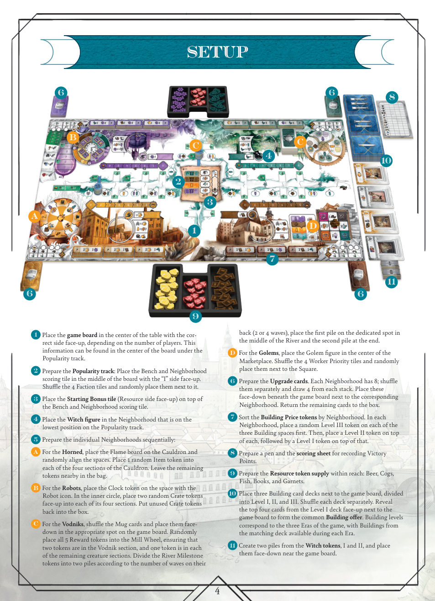
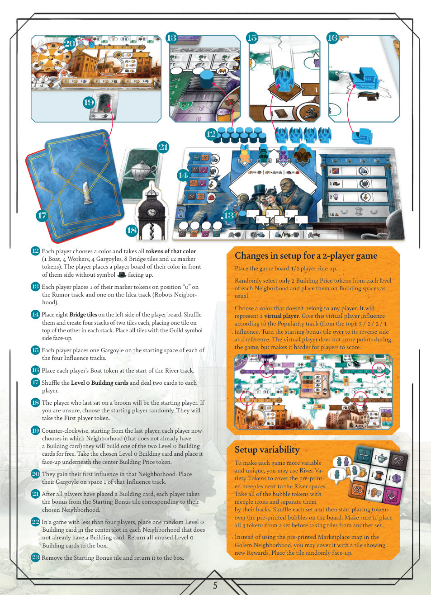
4游戏流程
游戏包含 3 个纪元（Era）。玩家从起始玩家起按顺时针方向轮流行动。每位玩家在自己的回合中可以执行下列四种行动之一；或者当你无法或不想执行其他任何行动时，必须执行**长凳行动（跳过）**。
你回合内的五种选项
- 放置工人——把一名工人放到任一街区的广场（Square）上，并触发该街区的街区小游戏。
- 进入建筑——把广场上的工人（或通过已建桥梁连通的邻街区工人）送到该街区一张可用的建筑卡上。
- 建造建筑——支付一张建筑价格标记上的资源，把一张新建筑卡从供应区盖到对应的建筑位上，并使你此街区的影响力前进 1 格。
- 修建桥梁——消耗 2 个对应的行会符号标记，放置一张桥段。
- 长凳行动（跳过）——把你该纪元剩下的第 4 名工人送到长凳上；按纪元获得谣言 / 酒杯卡奖励。
资源
游戏中有四种基础资源，与四个街区一一对应：
- 啤酒（Beer）——角魔街区
- 齿轮（Cog / Cogs）——机器人街区
- 鱼（Fish）——水妖街区
- 书（Book / Books）——魔像街区
除基础资源外，游戏还使用一种补充资源——谣言（Rumor），记录在玩家面板底部的谣言轨道上。每名玩家同一时间至多持有 6 单位谣言；超过 6 时，**多出的谣言全部丢失**。
游戏中的最后一种资源是 石榴石（Garnet）。这种稀有资源存在你的玩家面板上，可以代替任意一种基础资源或谣言使用。
工人
游戏中有四种工人：机器人（Robots）、水妖（Vodniks）、角魔（Horned）和魔像（Golems）。每种工人对应棋盘上一个特定街区，并被视为该街区的「主街区工人（home worker）」。所有工人都可以被派往任意街区并能触发相应行动。带有「任意工人（any worker）」符号的行动位可被任意工人触发；如果某个行动位显示特定工人，则**只有该种工人**可以执行该行动。
胜利点数
你以钥匙（Key）的形式获得胜利点数（VP）。部分胜利点数在游戏中获得，每个纪元结束时记录到计分纸上。游戏结束时还会因你在终局计分（End Game Scoring）中的成就获得额外的胜利点数（同样记录到计分纸上）。
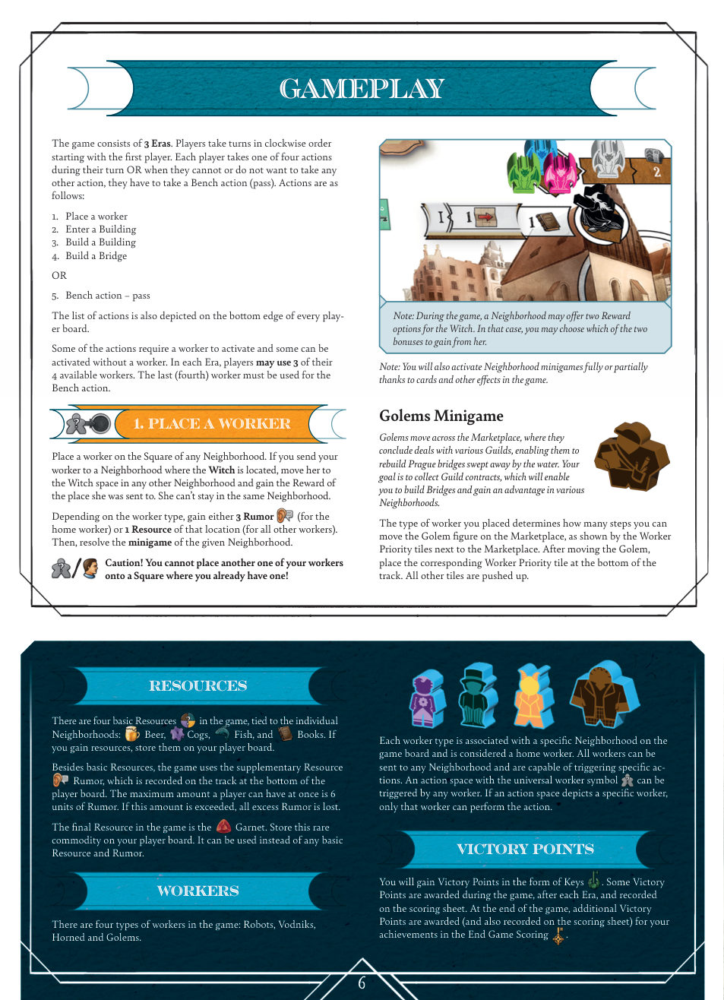
5五种行动
① 放置工人（Place a Worker）
把一名工人放到任一街区的广场上。如果你把工人派到女巫（Witch）当前所在的街区，则需要先把女巫移动到另一街区的女巫位上，并获得**你把女巫送去的那一街区**的奖励。女巫不能停留在同一街区。
根据你使用的工人种类，可获得以下二者之一：3 谣言（若使用的是「主街区工人（home worker）」），或该街区的 1 个资源（若使用的是其他种工人）。然后，触发该街区的街区小游戏。
提示：你也可以通过卡牌和其他游戏效果完全或部分触发街区小游戏（详见 §6 与 §12）。如果某个街区因为女巫标记（见 §7）提供了两种奖励选项，你可以选择其中之一获得。
② 进入建筑（Enter a Building）
如果你在某个街区的广场上有工人，可以把该工人送到该街区任意一张可用的建筑卡上。如果存在一条完整的桥梁（由两张桥段拼接而成），连接了两个街区，你也可以使用来自连通邻街区的工人（即便该街区的广场上仍保留着你的另一名工人）。
部分建筑卡显示「任意工人（any worker）」符号，允许你派遣任何种工人；其他建筑卡显示特定工人，则只能派遣对应种工人。把工人放到建筑卡上并触发该卡的建筑效果。每张建筑卡上至多放置一名工人。
示例：查尔斯在水妖街区有一名机器人工人，在魔像街区有一名魔像工人。这两个街区由桥梁连通，所以查尔斯可以用魔像工人进入水妖街区的建筑，也可以用机器人工人进入魔像街区的建筑。本回合他决定用魔像工人去水妖街区的一张建筑卡。该街区有两张可用建筑卡：一张要求魔像，另一张显示「任意工人」符号。两张都可进入，他选择要求魔像的那张。放置魔像工人，支付 2 个书，获得 4 个鱼。
③ 建造建筑（Build a Building）
选择任意一个建筑位，支付建筑价格标记上标明的资源。拿走该标记并把它放在你玩家面板旁（钥匙面朝上）。从公共建筑供应区的 4 张建筑卡中选 1 张，盖到刚支付价格的建筑位上。
如果该建筑位上原本就有一张建筑价格标记，你可以重建（覆盖）已有的建筑。如果该建筑位上有工人，把该工人移到该街区的广场旁边。如果该建筑位没有建筑价格标记，则你不能在此建造。
你建造建筑后，把你的石像鬼在该街区的影响力轨道上前进 1 格。公共建筑供应区在你的回合结束后立即补充到 4 张卡，因此始终保持 4 张可选。
示例：简决定在查尔斯的魔像工人占据的建筑位上重建。她支付 2 个鱼和 2 个书的费用。拿走建筑价格标记放到她的玩家面板旁。从供应区选 1 张新建筑卡覆盖原卡。覆盖时把魔像工人移到广场旁。
④ 修建桥梁（Build a Bridge）
你玩家面板上有 8 张桥段，每张代表你可在河上修建的一座桥的一部分。你可以选择其中一张可见的桥段来修建。
每张桥段上有 2 个行会符号。要修建该桥段，你必须在玩家面板左下角已标记有对应的 2 个行会符号。从面板上移除这 2 个标记（它们代表你已与这 2 个行会签订合同）。把所选桥段放到棋盘上任意一个可用的桥位上，并使你在该桥位所在街区的影响力前进 1 格。如果河上没有可用桥位，把桥段放在你玩家面板旁边的指定位置——不会让你获得影响力，但仍可得分（见 §10 终局计分）。
当一座桥梁由 2 张桥段（无论是否由同一玩家放置）拼成，即视为完整的桥梁（complete Bridge）。桥梁完整后，所有玩家都可以使用它。
示例：简想修建一座桥段。她之前已标记了橙色和蓝色行会符号，所以她可以修建第二行那张桥段。移除 2 个标记，把桥段放到河上任意可用位置。她选择了机器人街区的一个桥位，以提升她在该街区的影响力。
⑤ 长凳行动（跳过）
每位玩家每纪元只能使用 3 名工人。一旦你无法或不想执行上述任何行动，就跳过。把剩下的第 4 名工人放到长凳板上。如果你是该纪元第一个跳过的玩家，把工人放到顶部空格并获得先手标记。每位跳过的玩家立即获得下方所示的奖励（按纪元为谣言 / 酒杯卡，第三纪元无奖励）。
此刻，如果你还有留在棋盘上（未从广场移到建筑卡）的工人，每名这样的工人你可获得 1 谣言。剩余玩家继续完成各自的行动——所有玩家都跳过之后，执行该纪元的计分和新纪元的准备。
自由行动（Free Actions）
在你的回合内，你可以随时执行任意数量的自由行动：
- 打出酒杯卡——把它从手中弃置，立即执行该卡效果。
- 支付资源时，你可以用 3 谣言代替任意一种基础资源（啤酒、齿轮、鱼、书）。
- 回合开始时，你可以支付 3 谣言，把你的一名工人当作任意其他种工人使用——该轮剩余时间有效。
- 支付资源时，你可以用 2 个相同的同种基础资源（啤酒、齿轮、鱼、书）换取 1 个石榴石。
- 石榴石可以代替任何基础资源或谣言使用。
提示：不要真的去更换资源标记或工人米宝。支付 3 谣言被理解为「用 3 个谣言支付 1 个基础资源」，类似地，2 个相同的基础资源被理解为 1 个石榴石。工人的「变种」也仅在本回合有效。
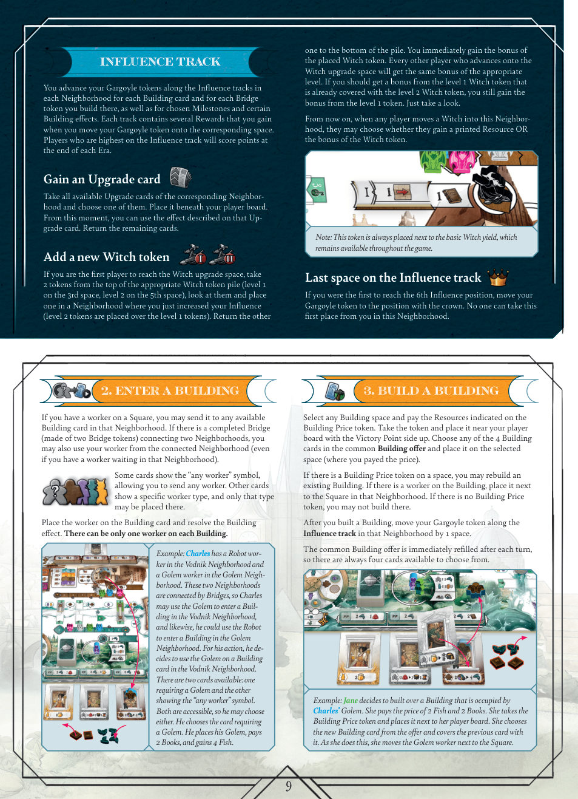
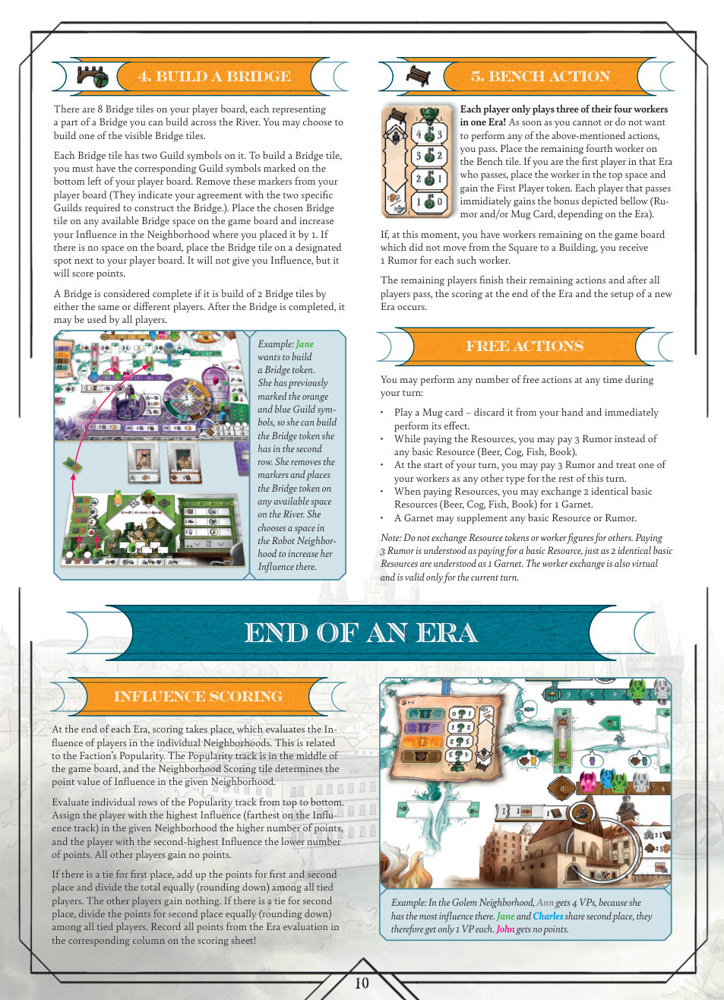
6街区小游戏
每个街区都有自己专属的街区小游戏——每当一名工人被放到该街区的广场上时就会触发。下面按街区逐一介绍。
魔像（Golems）——市集（Marketplace）
魔像在市集上穿梭，与各行会（Guilds）达成交易，从而修复被洪水冲垮的布拉格桥梁。你的目标是收集行会合同（Guild contracts），以便修建桥梁并获得各街区的优势。
你放置的工人种类决定魔像米宝在市集上的移动步数——具体步数由市集旁的「工人优先级片（Worker Priority tiles）」显示。移动完魔像后，把对应的工人优先级片放到该轨道最底部，其他片依次上推。
魔像沿正交方向（上下左右邻接的格子）移动所允许的步数，并获得经过和停留的每一格的奖励。如果奖励是市集四个角上的行会符号之一，把对应符号标记在你玩家面板左下角（用你自己颜色的标记）。每种行会符号你至多只能标记 1 个。
示例：安妮用机器人工人进入魔像街区。该街区没有女巫，所以她跳过女巫步骤。她获得 1 个书，然后触发街区小游戏。她获得 3 步移动市集上的魔像米宝。从中她获得 1 谣言和 2 个行会符号（标记在玩家面板上）。然后她把机器人优先级片移到最底部。
水妖（Vodniks）——河道（River）与水车轮盘（Mill Wheel）
水妖负责驯服河流。他们乘船行于河上，使其平静地流过城市。你的目标是沿河道尽可能走远——因为走得越远，终局计分中获得的分数越多。
水妖小游戏分两部分：河道移动与水车轮盘奖励。按以下顺序进行：
- 河道：把你的小船沿河道移到下一个标有你本次使用工人符号的格子（仅向前）。如果你到达河道末端，把你的标记放到10 分格；如果你是第一个走完整条河道的人，把你的标记放到 12 分格。然后把小船移回河道起点；你可以再走一遍。
- 水车轮盘：获得水车轮盘上对应你所使用工人那一段的所有奖励标记上的奖励。然后把这一段的任意 1 个奖励标记顺时针移动 1 格。如果该段没有标记，你获得 1 张酒杯卡。
示例：查尔斯用魔像工人进入水妖街区。该街区没有女巫，所以他跳过女巫步骤。他获得 1 个鱼，并把小船沿河道移到下一个标有魔像符号的格子。他跨过河上的水坝，因此可以从河道里程碑标记中选择 1 个（详见 §7）。从水车轮盘，他获得 1 个齿轮和 1 个书。然后他把「书」标记顺时针移动 1 格。
角魔（Horned）——大锅（Cauldron）与焰板（Flame board）
角魔掌握着各式魔法物品。你的目标是收集尽量多相同的物品并放入陈列柜（Display Case）。
根据你放置的工人种类，从大锅外圈对应的一段拿取 1 个物品标记（Item token）。然后获得焰板（大锅内圈）对应位置所示的奖励。从物品袋中抽 1 个新物品放到外圈的空格上，并把焰板顺时针旋转 90°。
把获得的物品放到你玩家面板陈列柜任意一行的最左空格上。如果你覆盖了一个奖励格，立刻获得该奖励。每一行只能放同一种物品。在极少数无法放置的情况下，把该物品放进修理槽（Repair slot）。
提示：你可以把这个物品视为任意种物品。因此你可以按规则放到陈列柜中任意一行的最左空格（前提是该行只能放同种物品）。
当你获得修理（Repair）图标时，你可以从袋中抽 1 个随机物品放到玩家面板的修理槽里，或者把修理槽里的 1 个物品移到陈列柜中（按常规规则）。修理槽里的物品数量无上限。修理槽中剩余的物品在游戏结束时计 1 VP，但不计入终局计分奖励。
陈列柜中物品的得分在终局计分时计算。每一行物品，你获得该行最右物品上方所示的分数。
示例：查尔斯用机器人工人进入角魔街区。该街区没有女巫，所以他跳过女巫步骤。他获得 1 个啤酒，然后触发街区小游戏。因为查尔斯是用机器人工人进入的，他可以从外圈的「问号物品」或「物品袋」二者中任选其一。从焰板他获得 1 谣言，并把它标记在玩家面板的谣言轨道上。查尔斯选择「问号物品」并把它放到陈列柜的最左空格上（覆盖了任意行会符号）。然后他拿一枚自己颜色的标记放到玩家面板上，标记任意一个行会。最后查尔斯需要从物品袋里抽 1 个新物品放入大锅，并旋转焰板。
机器人（Robots）——灵感轨道（Idea track）与板条箱（Crates）
机器人追求效率，生产的各种商品巧妙地模仿他人的工作。每当此街区小游戏触发，时间推进，你或者完成一件商品，或者交付当前所有已生产的产品。
把时钟标记（Clock token）顺时针移到与你本次使用工人符号对应的那一段，并从该段的板条箱标记（Crate token）上选择 1 个奖励。把你选中的板条箱标记翻到背面。如果你不想或不能从板条箱标记上拿奖励，把所有背面朝上的标记翻回正面，并每翻 1 个获得 1 谣言。请注意谣言上限为 6。
然后，让你的灵感轨道标记前进等于时钟标记经过的灯泡（Light Bulb）段数。如果你到达轨道末端，把里程碑（Milestone）用你的标记标上（详见 §7），并用新的标记从轨道起点继续前进。
示例：简用水妖工人进入机器人街区。该街区有女巫，所以她不跳过女巫步骤。她把女巫送到角魔街区获得 1 个啤酒。然后她在广场上获得 1 个齿轮。街区小游戏中，她把时钟标记顺时针移到水妖图标位。她可以在「小船移动奖励」或「1 个啤酒」中选择。她选择「小船移动奖励」并把船移动 2 格。然后她把灵感轨道标记前进 3 格——因为时钟标记经过了 3 段灯泡。第二步到达轨道末端时，她标上 1 个里程碑并获得其奖励。然后她拿一个新的标记放到「0」位并继续前进，因为还剩 1 步。
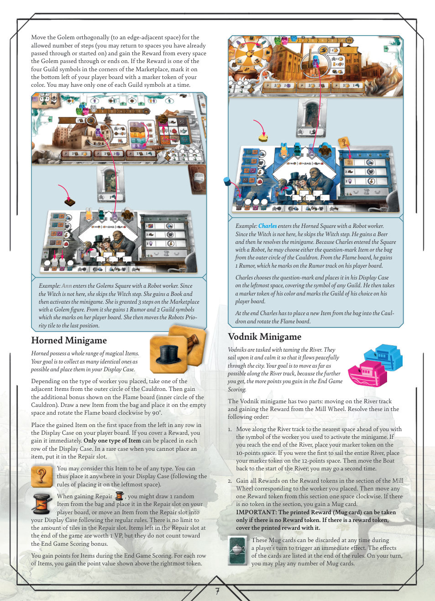
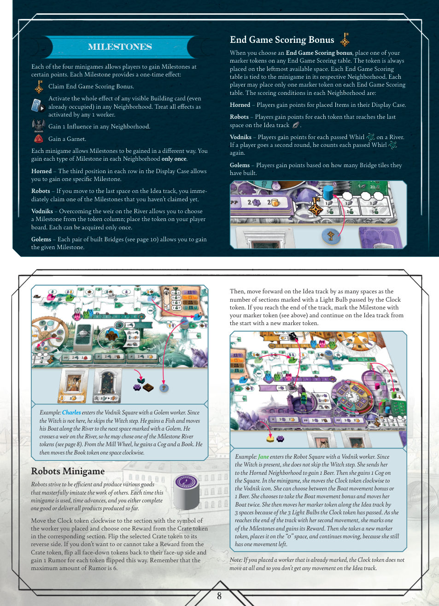
7里程碑与终局计分奖励
里程碑（Milestone）
四个街区小游戏各自允许玩家在特定时刻获得里程碑。每个里程碑提供一次性的效果：
- 认领终局计分奖励。
- 激活任一可见建筑卡的全部效果（即便该卡上已有工人）。所有效果按任意 1 名工人触发来结算。
- 获得任意街区的 1 点影响力。
- 获得 1 个石榴石。
每个街区小游戏以不同方式允许玩家获得里程碑。你在每个街区每种里程碑只能获得一次。
| 街区 | 获得里程碑的方式 |
|---|---|
| 角魔（Horned） | 陈列柜每一行的第三个位置允许你获得一种特定里程碑。 |
| 机器人（Robots） | 如果你移到灵感轨道的最后一格，立即认领一个你尚未获得的里程碑。 |
| 水妖（Vodniks） | 跨过河上的水坝允许你从里程碑标记列中选 1 个；把所选标记放到你的玩家面板上。每种里程碑只能获得一次。 |
| 魔像（Golems） | 每修建一对桥段（详见 §10）允许你获得指定里程碑。 |
终局计分奖励（End Game Scoring Bonus）
当你选择终局计分奖励时，把你自己的一个标记放到任意终局计分表上。标记始终放在最左边的可用空格。每个街区的终局计分表对应其专属街区小游戏。每位玩家在每个终局计分表上只能放 1 个标记。
各街区终局计分表的得分条件为：
- 角魔——玩家按陈列柜中放置的物品计分。
- 机器人——玩家按到达灵感轨道末格的标记数计分。
- 水妖——玩家按小船经过的漩涡数计分。如果玩家走了第二圈，每个经过的漩涡再计一次。
- 魔像——玩家按已修建的桥段数计分。
获得升级卡
拿走对应街区所有可用的升级卡，从中选 1 张。把它放在你的玩家面板下方。从此你可以使用该升级卡上描述的效果。把剩余的卡放回原位。
添加新的女巫标记
如果你是第一个到达女巫升级位的玩家：从对应女巫标记堆（Level 1 在第 3 格；Level 2 在第 5 格）顶部取 2 张标记，看过后把其中 1 张放到你刚增加影响力的街区（Level 2 标记放在 Level 1 标记之上）。把另 1 张放回堆底。你立即获得所放置女巫标记的奖励。之后到达女巫升级位的每位玩家将获得对应等级的同一奖励。
如果你获得的是已被 Level 2 标记覆盖的 Level 1 标记奖励，你仍然获得 Level 1 标记的奖励——看一眼即可。
从现在起，任何玩家把女巫移入该街区时，可以选择获得印刷的资源或女巫标记的奖励。
影响力轨道最后一格
如果你是第一个到达第 6 个影响力位置的玩家，把你的石像鬼移至带王冠的位置。本街区这一首格不再被其他玩家取代。
8影响力轨道与纪元结束
影响力轨道（Influence Track）
你为每个街区的建筑卡和桥段、选定的里程碑以及部分建筑效果让自己的石像鬼在该街区的影响力轨道上前进。每个轨道上有若干奖励格——当你的石像鬼移到对应格子时获得该奖励。每个纪元结束时，**影响力轨道上最高的玩家**将获得分数。
纪元结束的影响力计分
每个纪元结束时进行计分，评估玩家在各个街区的影响力。这与派系的人气息息相关。人气轨道位于棋盘中央，街区计分板（Neighborhood Scoring tile）决定各街区影响力的分值。
从人气轨道自上而下逐行评估。把该街区影响力最高（轨道上最远）的玩家评高分，第二高的评低分。其他玩家不得分。
若第一并列：把第一与第二名的分数相加，再除以并列人数（向下取整）。其他玩家不得分。若第二并列：把第二名的分数除以并列人数（向下取整）。把该纪元评估的所有分数记录到计分纸对应列上！
示例：在魔像街区，安妮获得 4 VP，因为她在此街区影响力最高。简和查尔斯并列第二，因此各得 1 VP。约翰不得分。
9新纪元准备
- 翻动街区计分板——第一个纪元结束后翻到标「二」的一面；第二个纪元结束后收进盒中。第三个纪元评估完后，执行终局计分。
- 按人气排序街区。统计每个街区的工人数（包括广场上的、建筑卡上的，以及被重建挤出来的）。将工人数最少街区的派系标记放在人气轨道最上方，然后依次往下，直到工人数最多街区的派系标记放在最下方。如有并列，对换两个街区位置。
- 把每名玩家的 4 名工人全部收回玩家面板。
- 弃掉公共供应区所有建筑卡，翻开下一纪元等级的 4 张卡。
- 在上个纪元获得长凳顶部奖励的玩家成为新纪元的起始玩家。
示例：最少被访问的街区是机器人。它们在新纪元的人气中排第一。魔像与水妖并列，对换位置。被访问最多的街区是角魔，角魔在新纪元的人气中排末位。
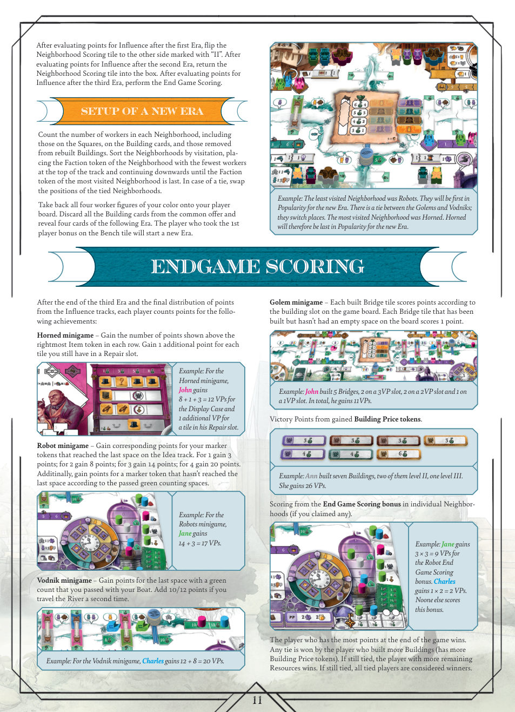
10终局计分
第三个纪元结束、影响力轨道最终分数分配后，每位玩家按下列成就计算分数：
- 角魔小游戏——每行物品中获得最右物品上方所示的分数。修理槽中每张剩余物品再得 1 VP。
- 机器人小游戏——到达灵感轨道末格的标记按以下数量给分：1 → 3 分；2 → 8 分；3 → 14 分；4 → 20 分。此外，未到达末格的标记按已过的绿色计分格计分。
- 水妖小游戏——小船最后到达的有绿色计分格的格子上所示的分数。如果小船走了第二圈，再加 10 / 12 分。
- 魔像小游戏——每张已修建的桥段按其在棋盘桥位上的 VP 计分。已修建但未放在棋盘桥位上的桥段每张得 1 分。
- 建筑价格标记带来的胜利点数。
- 各街区认领的终局计分奖励（如已认领）。
游戏结束时拥有最多分数的玩家获胜。出现平局时，建造最多建筑（拥有最多建筑价格标记）的玩家获胜。如仍平局，剩余资源多的玩家获胜。如仍平局，所有平局玩家并列获胜。
角魔示例：约翰陈列柜得 8 + 1 + 3 = 12 VP；修理槽中 1 张物品再加 1 VP。
机器人示例：简得 14 + 3 = 17 VP。
水妖示例：查尔斯得 12 + 8 = 20 VP。
魔像示例：安妮修建 7 座桥——其中 2 座在 3VP 桥位、1 座在 4VP 桥位——共得 26 VP。约翰修建 5 座桥——2 张在 3VP 位、2 张在 2VP 位、1 张在 1VP 位——共得 11 VP。
机器人终局计分奖励示例：简为机器人终局计分奖励得 3 × 3 = 9 VP。查尔斯得 1 × 2 = 2 VP。其他人此项不得分。
11单人游戏——议员
每张玩家面板的背面是给自动玩家——议员（The Councillor）——使用的。每张面板有一个不同的难度等级，信息在面板右下角。
布拉格市政厅拥有一项举世瞩目的尖端发明：在它的走廊里来回游荡着一台全自动电池供电的议员——无论从哪个意义上说它都名副其实。它永不疲倦、永不拒绝！它是否能比人类干得更好还有待观察。
在此单人变体中，你与一位自动对手——议员——进行对抗。你的目标是获得比它更多的胜利点数！议员试图模拟真实人类玩家的玩法。
准备
- 按二人局（含虚拟玩家）正常准备游戏，并作如下变更。
- 选择本局游戏的难度等级（建议从最低开始）。选中的难度的面板将成为议员的面板。把它翻到 solo 面朝上放在你的玩家面板旁边。
- 洗混 5 张议员奖励标记并放在议员的谣言轨道旁边。把议员的标记放在谣言轨道的「0」格。
- 洗混所有目标卡，在议员面板左边的「A」槽位发 1 张，「B」槽位发 1 张。剩余卡放回盒中。
- 洗混单人行动卡，面朝下放在旁边。
- 准备 2 张单人辅助卡在旁边，根据是否使用女巫单人卡选择对应面朝上。
- 把议员面板上的所有桥段翻到行会符号面朝下。
- 你永远是先手玩家，因此议员获得「A」槽旁边街区的首点影响力及该街区的起始奖励。在同一街区放置 1 张随机的零阶建筑卡。
游戏规则差异
大部分规则与多人局相同，以下为例外：
- 资源——议员获得的所有基础资源被视为万能。它可以用啤酒代替齿轮等。它可以用石榴石代替基础资源。当需要石榴石时，它必须支付石榴石。
- 谣言轨道——议员既不能用谣言换资源，也不能换工人种类。当谣言轨道填满时，它翻到奖励堆的顶部标记，然后把谣言轨道重置为 0。
- 行会符号——议员把行会符号视为万能。议员修建桥段时，支付任意 2 个行会符号并拿走最顶部的桥段。
- 酒杯卡——议员不拿任何酒杯卡。它按"应抽的酒杯卡数"在谣言轨道上前进。
- 升级卡与里程碑——议员不拿升级卡与里程碑。它翻到奖励堆的顶部标记并获得该奖励。
- 物品——议员不区分物品种类。获得标记后，它把标记面朝下放到陈列柜或修理槽。
目标卡
目标卡决定议员的策略，显示它偏好哪个街区、在建造或选择奖励时寻找哪些符号。当单人行动卡或议员奖励标记提到「A」时，永远看「A」槽位的卡。「B」同理。
议员的回合
议员在自己的回合翻开单人行动卡堆的顶部卡。该卡决定议员将执行哪个行动及位置。卡上显示若干行动行，议员按从上到下的顺序尝试执行。若无法执行该行，跳到下一行。当议员成功执行一个行动，回合结束，该卡弃置。当议员无法执行卡上任何行动时，它将考虑跳过并尝试单人辅助卡上的最后选项。若它仍然无法执行，则议员跳过本回合。
若议员的单人行动卡堆用完，洗混弃牌堆形成新的单人行动卡堆。
按街区的优先顺序
| 街区 | 议员策略 |
|---|---|
| 魔像（Golems） | 选择工人优先级轨最顶上的工人。把魔像在市集上逆时针移动。如果在中间，则先向上。议员按常规获得市集上的所有奖励。议员把行会符号视为万能。 |
| 角魔（Horned） | 按焰板优先级选工人：修理 > 任意资源 > 酒杯卡 > 谣言。选与所放工人顺时针相邻位置的物品。议员不区分物品种类，标记翻面朝下放入陈列柜最顶行。获得修理图标时，议员交替获取标记与放入陈列柜。 |
| 水妖（Vodniks） | 选择让自己在河上走得最远的工人。若平局，选择在水车轮盘上获得更多奖励的工人。议员永远把最右的奖励标记移到下一段。 |
| 机器人（Robots） | 选择让自己在灵感轨道上前进步数最多的工人。选板条箱标记时，优先选目标卡（A 优先于 B）的符号，否则选最左标记。当两个板条箱标记都被认领时，把所有标记翻回正面并获得谣言。 |
| 女巫 | 议员偏好目标卡的奖励（A 优先于 B）。若没有，把女巫移至「A」街区并获得资源。若已在「A」，把女巫移至剩余街区中人气最高的并获得资源。议员添加新的女巫标记时，从对应标记堆顶部随机添加 1 张。 |
奖励标记
当议员获得议员奖励标记（从谣言轨道、里程碑或升级卡），它翻开议员奖励堆的顶部标记并立即获得该奖励。可能是人气最高街区的影响力、1 个石榴石、1 个终局计分奖励，或 1 个目标卡奖励（按难度等级取卡上所示奖励）。获得奖励后，把标记放到议员面板旁的弃牌堆。议员奖励堆用完后，洗混弃牌堆中的所有标记形成新的议员奖励堆。
附加规则
- 进入建筑。议员优先选带目标卡奖励的卡（A 优先于 B）。若无，选更高等级的卡。平局时选离棋盘边最近的卡。它可以使用桥梁，且选择卡时永远考虑桥梁。它必须遵守卡的工人种类要求。若卡需要用酒杯卡或升级卡支付，它用谣言代替。若它无法支付使用该卡，必须选别的卡。
- 建造建筑。议员把基础资源视为万能；它可以支付任意一种（数量正确即可）。当议员建造建筑时，若它在街区内放有工人，它绝不建造该工人无法使用的卡。议员优先建造带目标卡奖励的建筑（A 优先于 B）。若无，它选供应区最左的建筑（若该街区内有工人也考虑）。选建筑位时，优先空位；其次更便宜的位；再次离棋盘边更近的位。然后在该街区获得影响力。
- 修建桥段。议员把行会符号视为万能。修建桥段时，支付 2 个行会符号并拿走最顶部的桥段。把它放在人气轨道上位置最高的街区中给最多 VP 的桥位。然后在该街区获得影响力。
- 考虑跳过。跳过之前，看长凳辅助卡决定议员是否能修建桥段（放在人气最高街区的最高 VP 桥位）或建造建筑（在其有工人的街区、人气最高的街区或其他地方）。若能，它必须执行该行动。若两者都行，它选第一个。然后它的回合结束。下一回合它按正常流程抽下一张行动卡。若两者都无法执行，它跳过。
- 终局计分奖励。目标：「A」或「B」的第一名。若未达成，目标「A」或「B」的第二名。第三或第四计分奖励，选择最有进展的街区小游戏。
- 影响力。永远优先考虑人气最高的街区。
- 大锅任意位置。选与上一次使用工人种类顺时针相邻位置的物品。
- 板条箱任意位置。按目标卡选奖励，否则选最左的板条箱。当两个板条箱都被认领时，把所有标记翻回正面并获得谣言。
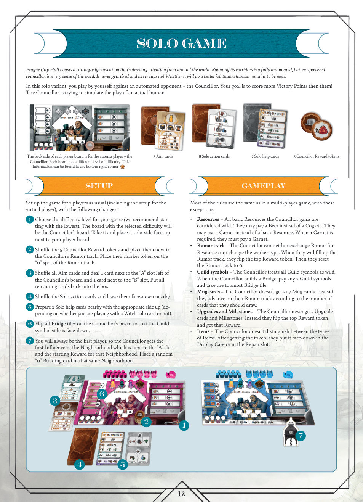
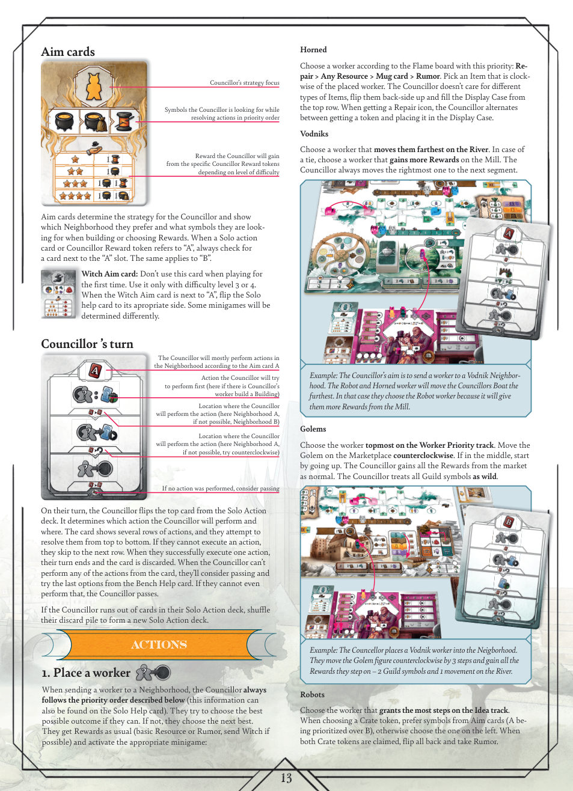
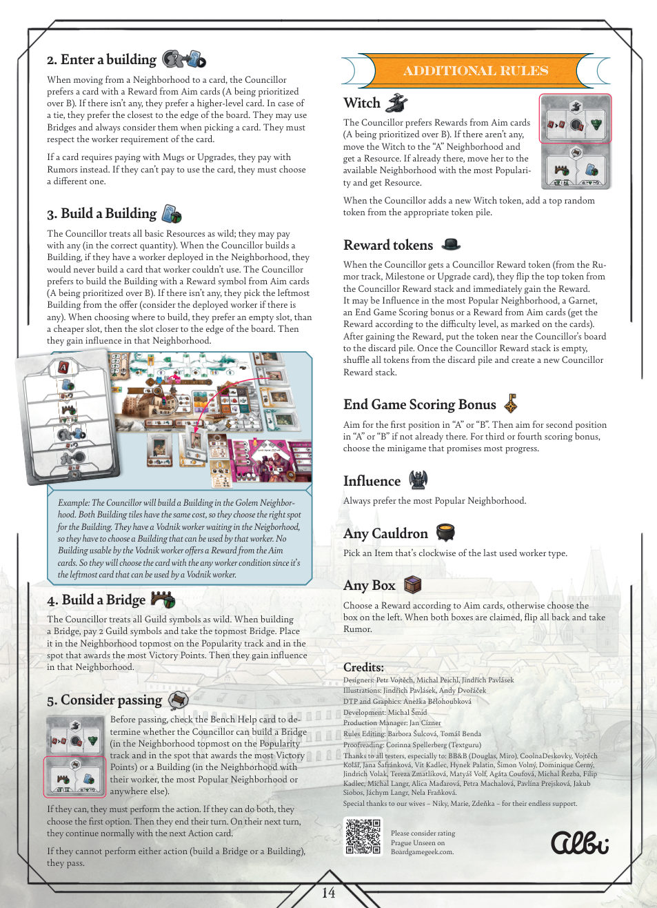
12卡牌一览
卡牌包含酒杯卡（弃置即生效）与升级卡（持续生效，置于玩家面板下方）。部分升级卡每回合只能使用一次。建议旋转这些卡牌以便于追踪本回合内已使用的卡牌；你的回合结束后立即把所有升级卡转回原位。
酒杯卡效果（节选）
| 卡牌 | 效果 |
|---|---|
| m10 | 将 1 个基础资源换成任意另一种，最多 2 次。 |
| m11 | 支付 1 个石榴石，获得 2 个任意的基础资源。 |
| m13 | 将 1 个基础资源换成 3 谣言。 |
| m14 | 将 1 个基础资源换成 3 谣言。 |
| m16 | 把你在广场上的 1 名等候工人移到另一个街区。目标街区不能已有你的其他工人；不获得任何奖励或触发。 |
| m6 | 把女巫人物从当前位置移到任意其他街区。该移动不获得任何奖励。 |
| m2 | 将该行动中的工人视为任意其他种类。 |
升级卡效果（节选）
| 卡牌 | 效果 |
|---|---|
| q15 | 在市集移动前，选任意一个空格作为你的起点。新起点不获得奖励。 |
| q29 | 在大锅选奖励前，你可以把焰板转到任意位置。 |
| q3 | 每回合一次：沿河道移动时获得 1 谣言。 |
| q4 | 每回合一次：支付 1 谣言可沿河道多移动 1 格。 |
| q11 | 每回合一次：支付 1 谣言可在市集多移动 1 格。 |
| q22 | 每回合一次：在灵感轨道上后退 1 格，获得 2 谣言。 |
| q2 / q10 / q18 / q26 | 在任一街区放置对应种类工人（Vodnik / Golem / Robot / Horned）时，获得相应奖励（鱼 + 酒杯卡 / 书 + 市集步数 / 齿轮 + 灵感步数 / 啤酒 + 谣言）。 |
| q8 / q16 / q24 / q32 | 在对应街区（水妖 / 魔像 / 机器人 / 角魔）内，把你的工人视为任意种类（适用于「放置工人」与「进入建筑」两个行动）。 |
q26 提示：即使你用升级卡改变了工人种类，你仍可获得该奖励。例如，你拥有 q26，把一名机器人工人放在任一街区，然后把它改为角魔工人，你仍然获得啤酒与谣言奖励。
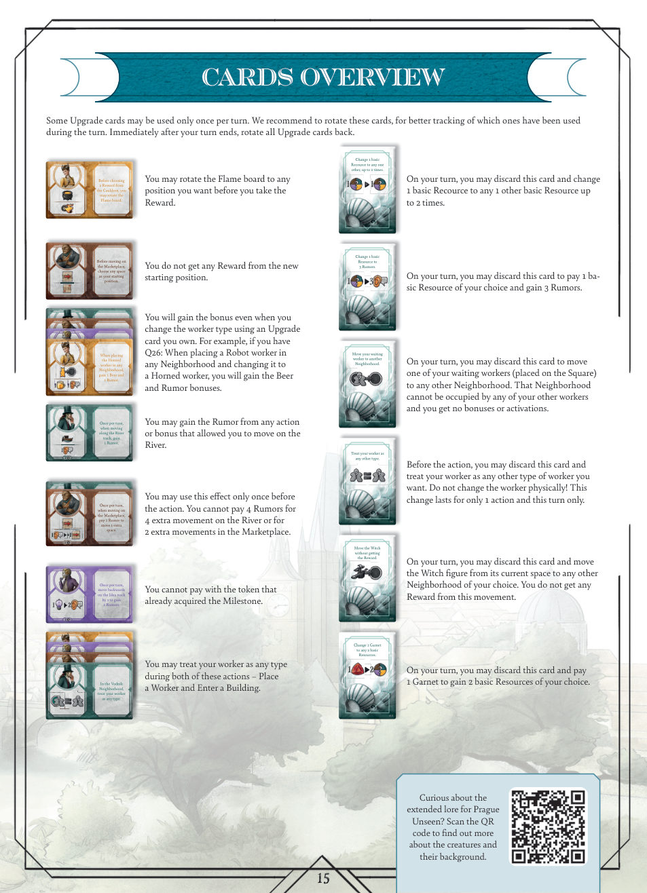
13符号图例
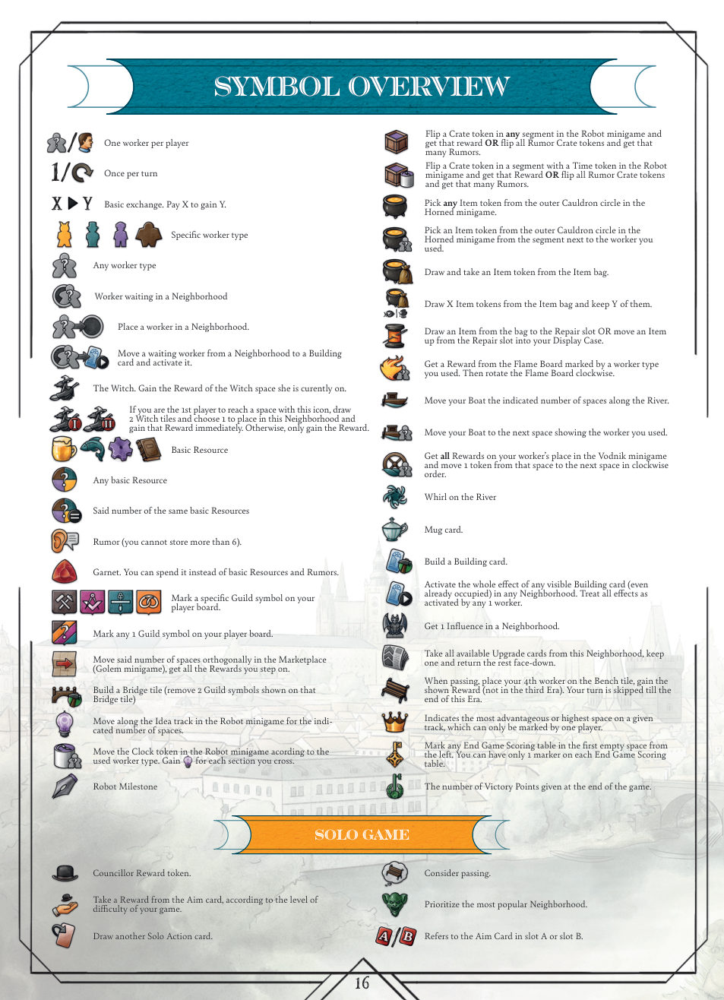
14制作人员
设计师：Petr Vojtěch, Michal Peichl, Jindřich Pavlásek
插画：Jindřich Pavlásek, Andy Dvořáček
排版与美术：Anežka Bělohoubková
开发：Michal Šmíd
制作管理：Jan Cízner
规则编辑：Barbora Šulcová, Tomáš Benda
校对：Corinna Spellerberg (Textguru)
致谢所有测试者，尤其是：BB&B (Douglas, Miro), CoolnaDeskovky, Vojtěch Kolář, Jana Šafránková, Vít Kadlec, Hynek Palatin, Šimon Volný, Dominique Černý, Jindrich Volak, Tereza Zmatlíková, Matyáš Volf, Agáta Coufová, Michal Řezba, Filip Kadlec, Michal Langr, Alica Maďarová, Petra Machalová, Pavlína Prejsková, Jakub Siobos, Jáchym Langr, Nela Fraňková。
特别感谢我们的妻子——Niky, Marie, Zdeňka——一直以来的支持。